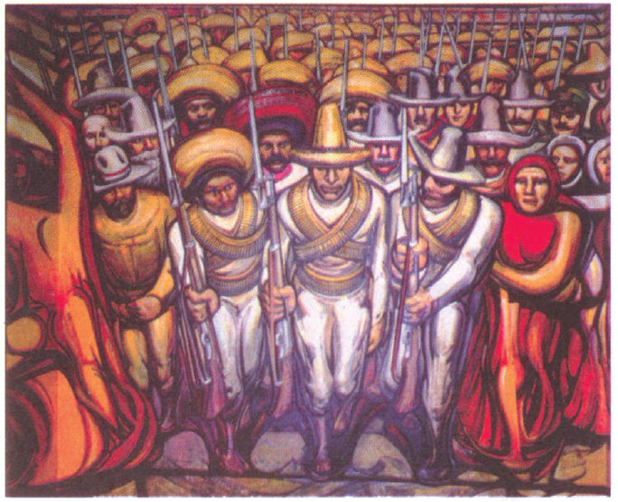
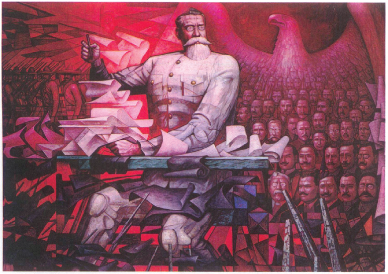

A pintura mural mexicana do século XX caracteriza-se por suas grandes dimensões, sendo exibida em espaços públicos como palácios, bibliotecas, escolas e museus. Abrange temas da história nacional que vão desde o período pré-hispânico até a Revolução Mexicana. Ao trabalhar o tema da Revolução Mexicana iniciada em 1910, um professor do ensino médio propõe aos alunos a análise de duas pinturas do muralismo mexicano.
David Alfaro Siqueiros: “Do Porfirismo à Revolução” - O Povo em Armas.(1966). Acrílico e piroxilina sobre madeira forrada de tela. Sala XIII - Museu Nacional de História – Cidade do México. In: VASCONCELLOS, Camilo de Mello. Imagens da Revolução Mexicana; o Museu Nacional de História do México. 1940-1982. São Paulo: Alameda, 2007.
Jorge Gonzáles Camarena: “A Constituição de 1917”. (1967). Pintura em acrílico sobre tela. Sala XII – Museu Nacional de História – Cidade do México. In: VASCONCELLOS, Camilo de Mello. Imagens da Revolução Mexicana; o Museu Nacional de História do México. 1940-1982. São Paulo: Alameda, 2007.
Após a análise, professor e alunos chegaram a algumas conclusões sobre as pinturas, dentre as reproduzidas a seguir.
Estão corretas APENAS as conclusões